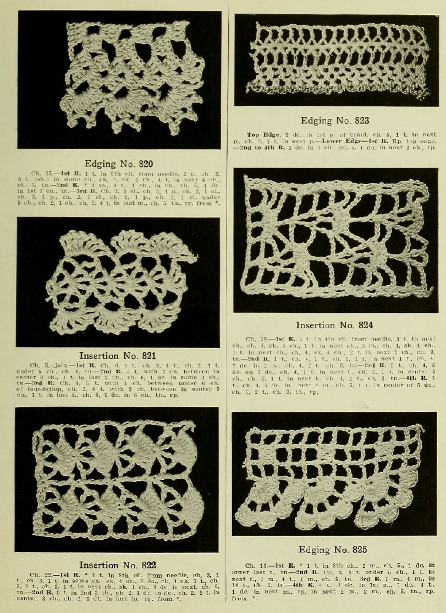
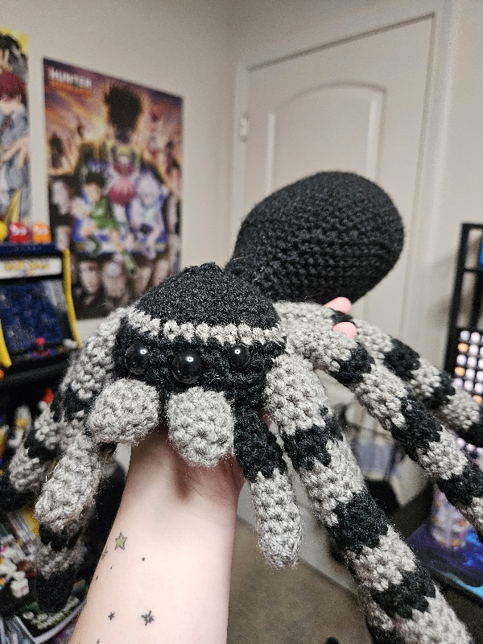
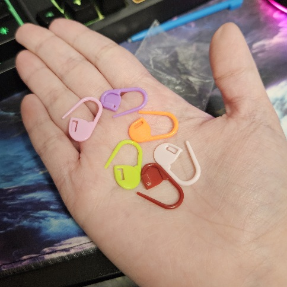
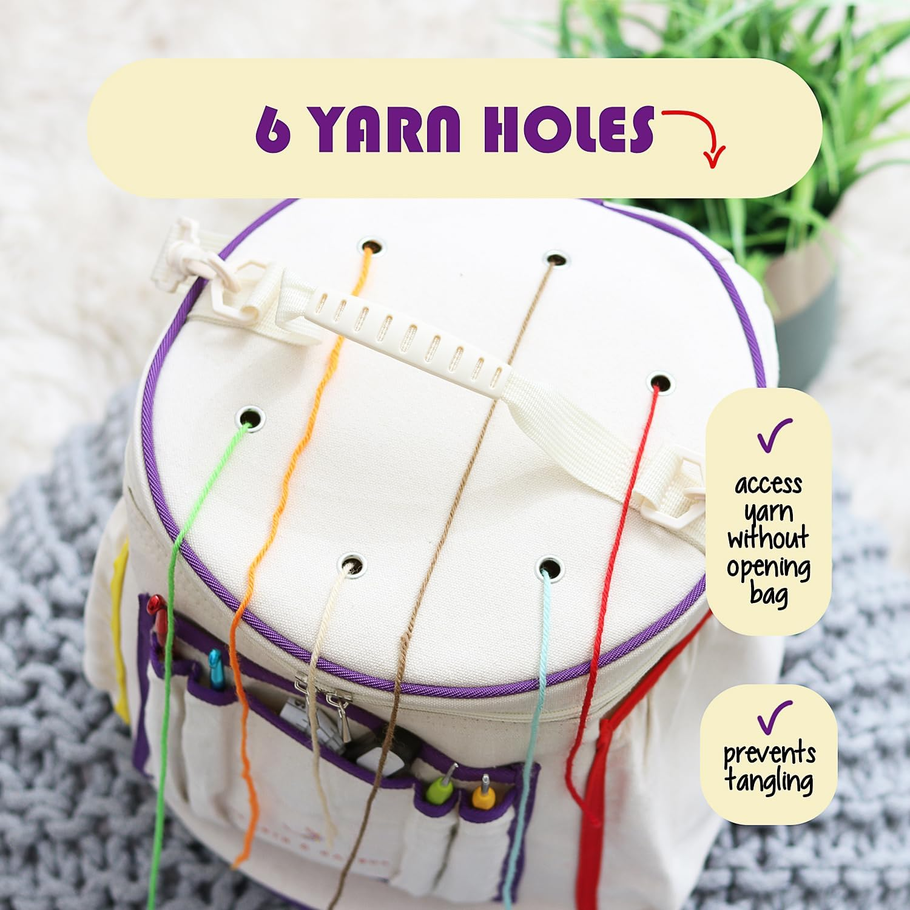
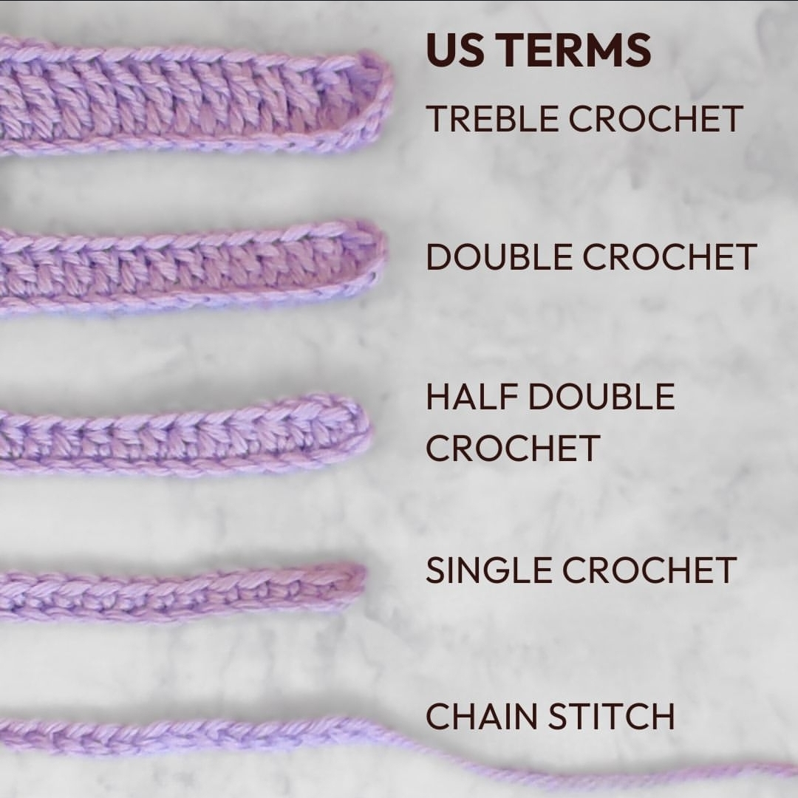
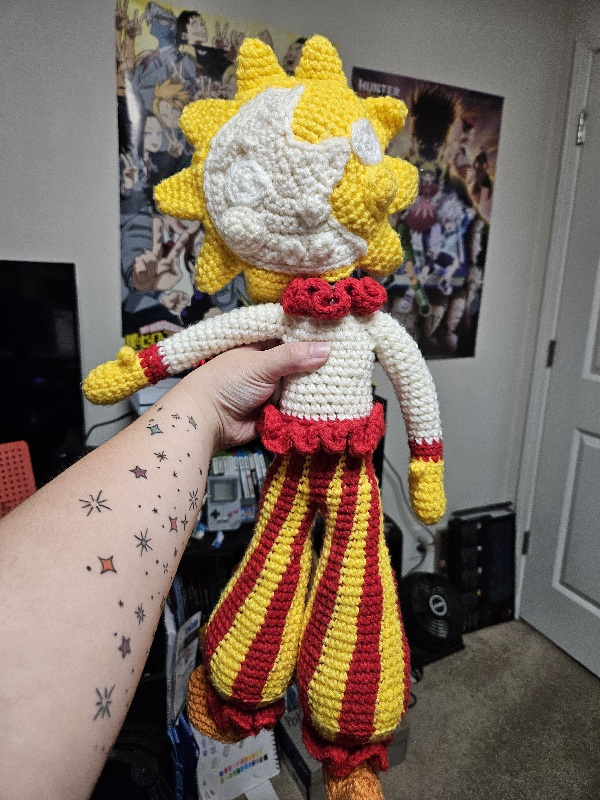

What Is Crocheting?
Crocheting is a textile hobby where people create a wide variety of items using yarn and a hook. Many people mistake crocheting and knitting for one another, but they aren't quite the same. Knitting utilizes two needles used simultaneously, while crocheting only uses a singular hook. Many people may think of it as an "old person" hobby, but it can be enjoyed by anyone of all ages!
Its exact origins are not clearly documented, as the term "crocheting" itself was only coined in 19th century Europe. However, even that alone proves a long history of crocheting - 200 years, to be exact! Crocheting has no doubt changed and developed a lot from its first iteration, but it still holds its charm and its beauty all around the world today.

Source: Joy's Vintage Books
Who Am I?
Hello hello! My name's Bella, but I also go by Isaac or Arcade. Thanks for checking out my little hobby corner! I have quite a wide variety of hobbies that I enjoy, but I figured showing off my crocheting would be the most fun of them. I'm 20 years old in my second-to-last semester of college studying computer science. I officially started crocheting about two years ago, but I had been trying to get into it for much longer than that. It took me a long time to find a way of learning that really clicked for me. But once it clicked, I had a lot of fun with it. It's always so fulfilling watching a project come together and knowing that I'm the one who made it happen. I hope that this webpage makes at least someone interested in checking it out for themself - and even if it doesn't, I hope it's been enjoyable to read regardless.
Outside of crocheting, though, I have many other little hobbies: Writing, drawing, and most recently, voice acting! I'm also an avid gamer.

Source: Me! Pattern found on Instagram, unavailable.
Best Times To Crochet?
Anytime! As long as you have the time to spare and the materials by your side, you can crochet whenever your heart desires. You can work on a little bit at a time, put it down to do something else, and come right back again whenever you're ready. the only limitations are whatever you impose on yourself.
Just make sure you store your unfinished work in a secure place, otherwise you risk accidentally ruining your progress! Using additional tools such as stitch markers and counters can also help keep track of your progress so you don't lose track of where you are.

Source: Me!
Best Places To Crochet?
Wherever! Again, as long as you have the time and the materials, you can crochet wherever you want to. There are many different kinds of tools and accessories you can buy or D.I.Y. that make bringing your projects with you easier. It's a great way to waste a little bit of time if you're stuck waiting at the DMV!
...Maybe don't go crocheting in the rain, though. Wet yarn isn't pleasant to work with. Neither is muddy yarn. So long as you're staying dry and your yarn stays clean, anywhere is good to go.

Source: Amazon
How Do I Get Started?
The most basic tools you need to get started with crocheting are a hook, some yarn, and a pair of scissors. What you decide to make first is entirely up to what interests you the most: Blankets, scarves, plushies... No matter where you start, though, you'll need to learn some basic fundamentals first. Below is a list of some basic stitches and terms to get you started on your journey. Note that these are listed in U.S. TERMS - this is important, as some instructions may use U.K. TERMS!
- Yarn over (yo)
- Slip knot
- Magic ring/circle (mr/mc)
- Chain stitch (ch)
- Single crochet (dc)
- Half-double crochet (hdc)
- Double crochet (dc)
- Treble crochet (trc)
- Slip stitch (slst)

Source: Morris and Sons
Why Crochet?
Learning how to crochet opens up a whole world of customization. With the right skills, materials, and time, you can create a whole new wardrobe, make decorations that fit your aesthetic, or
make a plushie of that one character you can never seem to find merch of. Not to mention crocheted items make the perfect gifts for parties, or even the perfect products to make a little extra cash!
Plus, in a world where everything is available to us almost instantly and without effort, sometimes it's nice to be able to sit back and take the time to really make something by hand.
Some things you can crochet (that aren't just scarves or hats):
- Coasters
- Cardigans
- Bags (of any shape or size!)
- Tapestries
- Washcloths
- Accessories
- And many more!

Source: Me! Pattern by mushroomsANDmeadows.
AI Prompts
Absolutely no generative AI was used in the creation of this website. All images are of either projects that I made myself, or that other people have shared online. I am very against the use of generative AI, especially in creative spaces, and I refuse to use it for anything until it is better regulated and more environmentally friendly.
On the topic of AI, generative AI is actually a problem within the crochet community. Namely, there are instances of people using genAI to generate a picture of a "crocheted" item, then claiming to sell the pattern for that item (when in reality there is no such thing). Please be mindful of that when you are buying patterns - or anything, for that matter! - so you don't get scammed out of your money.
Source: Adobe Stock